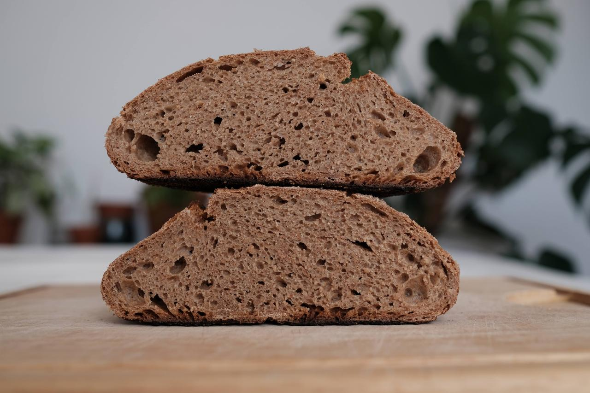
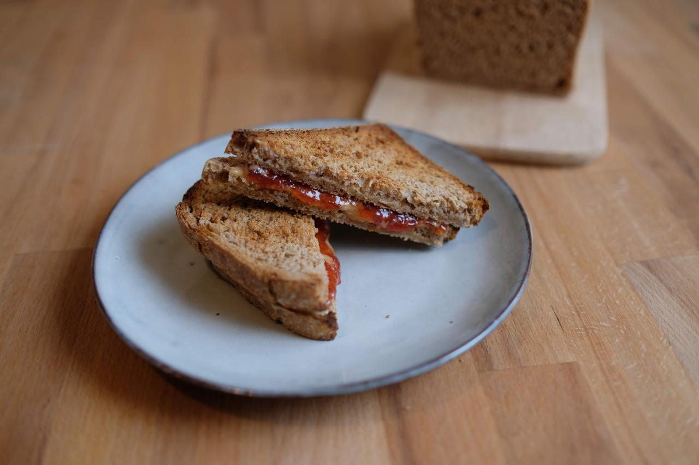

Weizenvollkornbrot mit Roggen und Sauerteig
Heute habe ich ein Weizenvollkornbrot mit Roggen gebacken. Das Brot ist locker und luftig, und durch den Roggen sehr saftig und bleibt lange frisch. Das Brot ist durch die lange Gare sehr mild, der Roggen verleiht dem Brot einen besonderen Geschmack.

Vollkornmischbrot
Dieses Brot backe ich oft, wenn ich mich nicht entscheiden kann, auf was ich Lust habe. Das Rezept ist auch genauso entstanden. Ich hatte kleine Reste Dinkel, Roggen und Weizen und diese kamen einfach zusammen in die Schüssel. Heraus kommt ein leckeres, lockeres und aromatisches Vollkornbrot für alle Gelegenheiten. Das Rezept ergibt zwei Brote.

Brioche mit Sauerteig und Nusszopf
Brioche wird klassischerweise mit Hefe zubereitet. Da ich nie frische Hefe zuhause habe, habe ich ein Rezept mit Sauerteig entwickelt. Das Ergebnis ist ein superweiches, leicht süßes Brot, das an Hefezopf erinnert, aber viel aromatischer und lockerer ist. Eine bessere Version des Hefezopfs also. Das Rezept ist mein Standardrezept für hefefreien Hefeteig. Ich verwende ihn für Brioche, Zimtschnecken, Nusszopf, Blechkuchen, Buchteln, was auch immer. Wichtig ist aber: er braucht Zeit. Das ist aber gut so, finde ich. Anstatt des Weizenmehls funktioniert auch Dinkelmehl Type 630.

Dinkel-Vollkorn Toastbrot
Manchmal habe ich Lust auf weiches Brot ohne Kruste, das einfach nur als Unterlage für Erdnussbutter mit Marmelade dient. Allerdings habe ich dann keine Lust, besagtes Brot voller Zusatzstoffe und aus Weißmehl und in der Plastiktüte im Supermarkt zu kaufen; einen kleinen Anspruch habe ich schon. Also musste ein Rezept für ein Vollkorntoastbrot her. Nach ein paar Tests und Missgeschicken bin ich dann auf dieses Rezept gekommen.

Laugenbrezeln mit Sauerteig
In diesem Rezept zeige ich euch, wie man leckere Brezeln mit Sauerteig backt. Das Rezept ist für 12 Laugenteilchen ausgelegt, die als Brezeln, Brötchen, Stangen oder Bagel geformt werden können. Ich arbeite gerne mit echter Lauge, diese kann man als 4%ige Lösung in Bäckereien oder Apoteken erhalten oder als Laugenperlen im Internet. Im Gegensatz zu Natron schmeckt das Gebäck dann auch wie vom Bäcker.